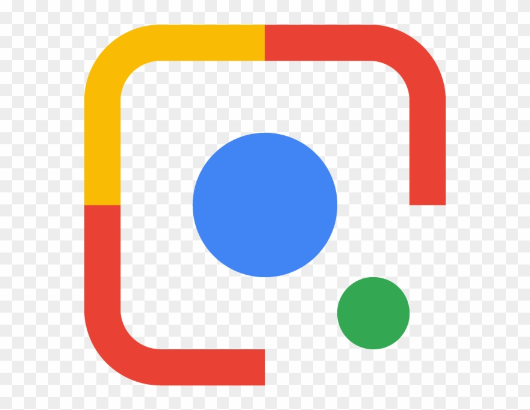
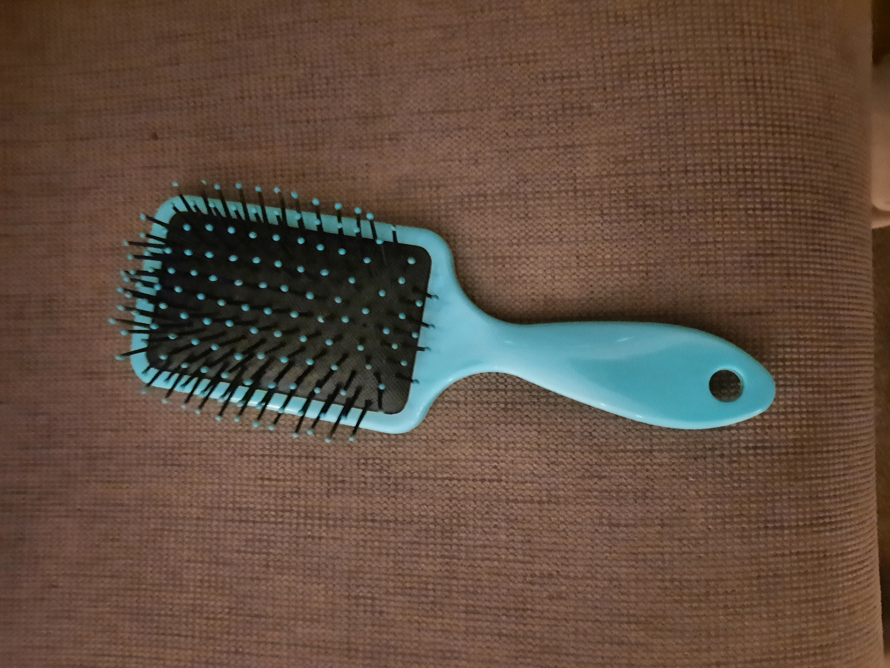
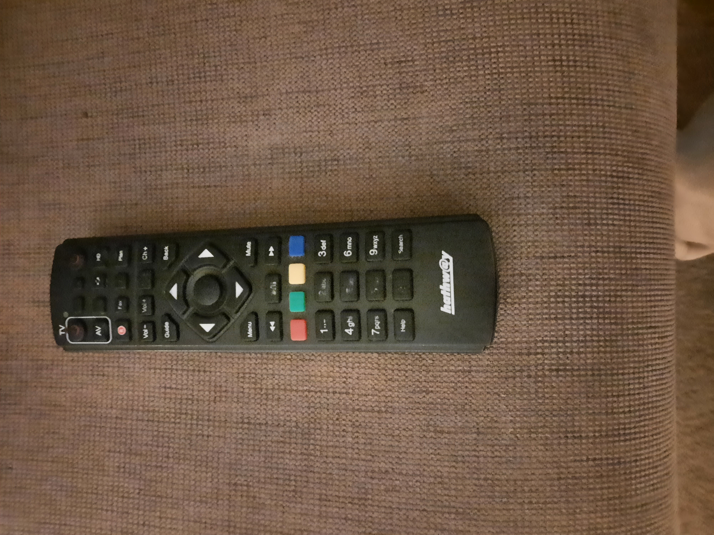
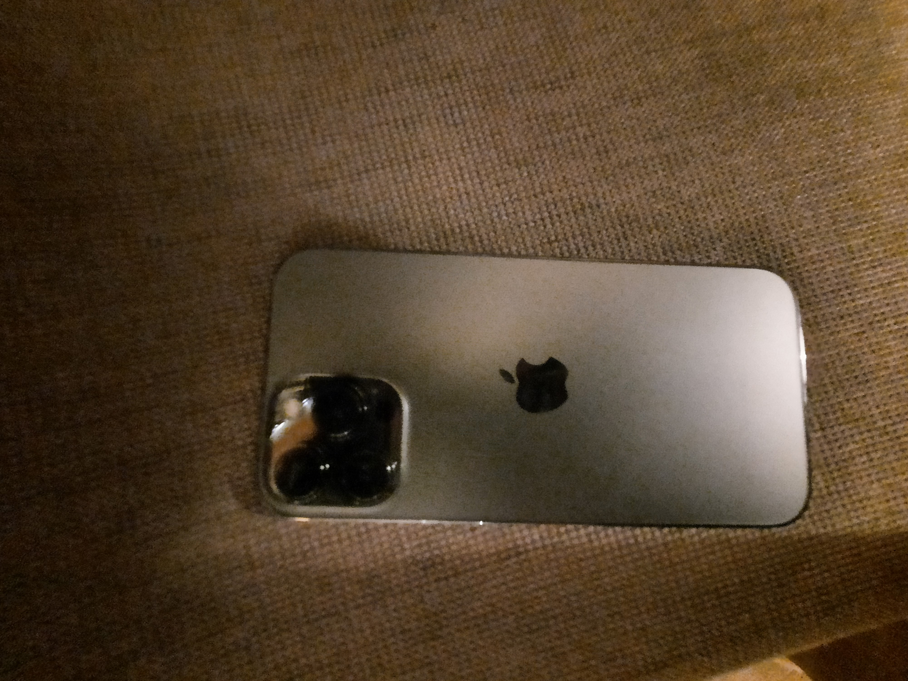

Real Time Image Identification App
Case Study
Google Lens
OR
MOBILENET
Which is better??
My Study :
-
Test Image- Shih Tzu

- Test Image- Hair Brush 
-
Test Image- Bisleri Water Bottle

- Test Image- TV Remote 
- Test Image-Iphone 